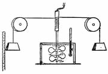
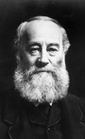

NO ME SALEN
(APUNTES TEÓRICOS Y EJERCICIOS DE BIOFÍSICA DEL CBC)
CALOR Y TERMODINÁMICA
|
|

|
| |
 |
23)
a) ¿ Qué cantidad de calor debe
entregar un mechero para
calentar 2 litros de agua de
20ºC a 21ºC?
b) Si la misma variación de
temperatura se quiere lograr
con un dispositivo similar al
utilizado por Joule en su
famosa experiencia ¿Desde
qué altura hay que dejar caer
dos pesas, de 10 kg cada
una? Desprecie la capacidad
calorífica del sistema de
paletas. |
 |
|
| |
Lo que ves en la figurita es un esquema de un experimento famoso que hizo el señor Joule, el de la foto. Es famoso porque demostró que el calor era una forma más de energía y sirvió para medir exactamente la equivalencia entre la energía mecánica y la energía calórica. Algo que hoy recibe el nombre de equivalente mecánico del calor.
Básicamente, lo que se hace en el experimento es calentar agua. Pero en lugar de calentarla con un mechero o cosas por el estilo, se la calienta con agitación mecánica.
Para preparar esta clase hice una búsqueda por distintos textos y no encontré uno sólo que lo explicara correctamente. Porque contado como lo hice en el párrafo anterior, visto en el esquemita, parece muy simple. Sin embargo los textos no describen una característica crucial que, si no se tiene en cuenta, el experimento no funcionaría, y la equivalencia no aparecería.
Este ejercicio te plantea esa equivalencia en dos situaciones diferentes. Mientras lo resolvemos andá pensando cuál será ese "detalle" que los libros no mencionan (y que no es ningún detalle, sino una pieza fundamental del experimento).
La parte a) simplemente nos recuerda y advierte que para calentar agua hay que entregar calor. Y para calcularlo usamos la fórmula de la calorimetría como ya lo hicimos un montón de veces:
Q = mH2O . cH2O . ΔT
La mención de que el aumento de temperatura no es cualquiera, sino uno que va de 20 ºC a 21 ºC, no es casual ni gratuita. Pasa que el agua no se calienta por igual en cada intervalo de temperatura: para aumentar en un grado cuando está fría hace falta una cantidad de calor menor que para elevar en un grado cuando está caliente. Nosotros solemos despreciar esa diferencia y hacer de cuenta que el calor específico del agua, cH2O, es constante y vale 1 cal/g °C. pero lo cierto es que eso vale sólo si se calcula para el intervalo de temperaturas que indica el ejercicio éste, de 20 ºC a 21 ºC.
Q = 2.000 g . 1 cal/g °C . 1 °C
|
|
James Joule |
|
|
|
Y acá llega el experimento de Joule. Para mover las paletas que calentaron el agua Joule tuvo que levantar esas pesas una altura h. Él hizo la experiencia y encontró la equivalencia entre energía mecánica (que actualmente medimos en J, joule). Nosotros, debemos usar la equivalencia para hallar la altura, o sea, debemos recorrer el camino inverso usando esa equivalencia.
1 J = 0,24 cal
o lo que es lo mismo:
1 cal = 4,18 J
Como necesitamos 2.000 cal, eso es equivalente a necesitar 8.360 J. Energía calórica que saldrá de la energía mecánica de las pesas. O sea, de su energía potencial al elevarlas una altura h.
Q = EM = m . g . h
8.360 J = 20 kg . 10 m/s² . h
y despejando h, obtenemos: |
|
|
|
|
|
Joule utilizó una masa de 6 litros de agua, para minimizar el calor absorbido por el resto del dispositivo. Además utilizó pesas de 25 kilos, y realizó la bajada de las pesas en tramos secuenciales de 1,5 metros cada uno. Pero además, debe haber cuidado que el experimento transcurriera de un modo especial, que los libros no te cuentan. ¿Ya lo descubriste?
Las pesas no deben caer a gran velocidad. El dispositivo del experimento debe ser tal que las pesas desciendan a velocidad muy lenta, y en lo posible, constante. Para ello se colocan muchas paletas dentro del agua, para que su viscosidad frene lo suficiente el giro, y un mecanismo reductor (algo alcanza a apreciarse en el esquemita) para que un pequeño avance en la caída equivalga a un buen número de vueltas de paletas.
Si así no se hiciera, la energía potencial de las pesas se transformaría en energía cinética (y no entraría al agua en forma de calor) y terminaría pasando (ahora sí en forma de calor) al piso, o al cuerpo que frenase las pesas al terminar su descenso.
Esa el la clave: el descenso debe ser muy lento, lo más lento que se pueda. |
|
|
|
|
|
 |
| Desafío: Si encontrás un texto que cuente y explique este asunto clave, please, escribime y le hago justicia. |
|
| |
|
| |
|
| Algunos derechos reservados.
Se permite su reproducción citando la fuente. Se recomienda no utilizar el dispositivo de Joule para revolver los fideos, ya que cuesta mucho energía desenredarlos. Última actualización sep-10. Buenos Aires, Argentina. |
|
|
| | |
|
|